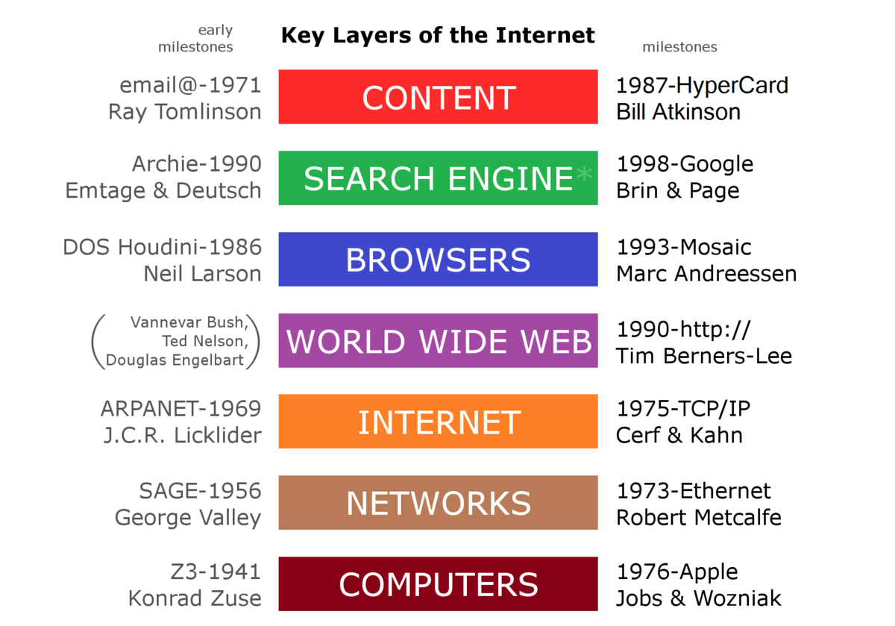

Introduction to Web
Web consists of billions of clients and server connected through wires and wireless networks. The web clients make requests to web server. The web server receives the request, finds the resources and return the response to the client. When a server answers a request, it usually sends some type of content to the client. The client uses web browser to send request to the server. The server often sends response to the browser with a set of instructions written in HTML(HyperText Markup Language). All browsers know how to display HTML page to the client.
Web Application
A website is a collection of static files(webpages) such as HTML pages, images, graphics etc. A Web application is a web site with dynamic functionality on the server. Google, Facebook, Twitter are examples of web applications.
A web application (or web app) is application software that runs on a web server, unlike computer-based software programs that are run locally on the operating system (OS) of the device. Web applications are accessed by the user through a web browser with an active internet connection. These applications are programmed using a client–server modeled structure—the user ("client") is provided services through an off-site server that is hosted by a third-party. Examples of commonly-used web applications include: web-mail, online retail sales, online banking, and online auctions.
Client/Server Concepts
In client server computing, the clients requests a resource and the server provides that resource. A server may serve multiple clients at the same time while a client is in contact with only one server. Both the client and server usually communicate via a computer network but sometimes they may reside in the same system.

Components of web applications
Any web application, big or small, contains these major components:
View Layer:- When you consider an MVC application, the View layer component gives an interface to the application. Regardless if it is for users with a browser or for another application using Web services.
View layer is the bridge for getting the data in and out of the application.
It does not have business logic, like calculating interest for a banking application or storing items in a shopping cart for an online catalog. It also does not contain any code for existing data to or retrieving data from a data source. Business logic is managed by the Model layer. View layer is more focused on the interface.
Business Layer:- It is also known as Business Logic or Domain Logic or Application Layer. The function of the business layer is to accept user requests from the browser, processes them, and determine the routes through which the data will be accessed.
The workflows by which the data and requests travel through the back end lay encoded in a business layer.
Data Access Layer:- This layer is built to keep the code you use to pull data from your data store like database, flat files, or web services separate from business logic and presentation code.
So even if you have to change data stores, you don’t end up rewriting the whole thing.
There are many ORM frameworks that are blending the DAL with other layers which makes development easy during web application development services.
Error handling, security, logging:- When you build a web application, people generally tend to focus on the end-goal, building and testing only for situations when things go right. Alas! things rarely go right all the time in the real world.
This is where error handling is a vital part of any application’s user experience.
And, if it is done well, it can leave your users feeling informed and properly considered.
Types of Web Content
In simple terms, a web application architecture or a type of web application is a pattern of interaction between various web application components that we discussed above. The “type” of web application architecture is directly proportional to how the application logic is distributed among the client and server sides.

Three primary types of web application architecture are:
Serverless Architecture — A serverless architecture is a simple way to build and run applications and services without having to manage infrastructure. The application you deploy runs on servers, but all the server management is done by a third-party service provider like AWS. You don’t need to provision, scale, and maintain servers in order to run your applications, databases, and storage systems.
Single-Page Applications — A single-page application or SPA is a type of web application architecture which interacts with the user by dynamically rewriting the current page rather than loading entire new pages from a server. By this way, one can avoid interruption of the user experience between successive pages which makes the application behave more like a desktop application.
All the vital code of HTML, JavaScript, and CSS is retrieved with a single page load, or the appropriate resources are dynamically loaded and added to the page as necessary.
Microservices — They can be called small and lightweight services which are responsible for executing a single functionality. The Microservices Architecture framework allows the developers working with it to not only enhance productivity but also speed up the entire deployment process.
Overview Of HTTP
The Hypertext Transfer Protocol (HTTP) is an application-level protocol for distributed, collaborative, hypermedia information systems. This is the foundation for data communication for the World Wide Web (i.e. internet) since 1990. HTTP is a generic and stateless protocol which can be used for other purposes as well using extensions of its request methods, error codes, and headers. Basically, HTTP is a TCP/IP based communication protocol, that is used to deliver data (HTML files, image files, query results, etc.) on the World Wide Web. The default port is TCP 80, but other ports can be used as well. It provides a standardized way for computers to communicate with each other. HTTP specification specifies how clients' request data will be constructed and sent to the server, and how the servers respond to these requests.
HTTP request
An HTTP request is made by a client, to a named host, which is located on a server. The aim of the request is to access a resource on the server.
To make the request, the client uses components of a URL (Uniform Resource Locator), which includes the information needed to access the resource. The components of a URL explains URLs.
A correctly composed HTTP request contains the following elements:
1.A request line.
2.A series of HTTP headers, or header fields.
3.A message body, if needed.
Each HTTP header is followed by a carriage return line feed (CRLF).
After the last of the HTTP headers, an additional CRLF is used (to give an empty line), and then any message body begins.
HTTP response
An HTTP response is made by a server to a client. The aim of the response is to provide the client with the resource it requested, or inform the client that the action it requested has been carried out; or else to inform the client that an error occurred in processing its request.
An HTTP response contains:
1.A status line.
2.A series of HTTP headers, or header fields.
3.A message body, which is usually needed.
As in a request message, each HTTP header is followed by a carriage return line feed (CRLF). After the last of the HTTP headers, an additional CRLF is used (to give an empty line), and then the message body begins.
Generation of dynamic web pages
CGI - A specification for writing programs that enables transactions between a Web server and other programs on a server
PHP - Scripting language that runs in the Linux operating system; used to extract and present data from a database
Servlet - Small application that runs on an Internet server, typically written in Java or Perl
ASP - Microsoft's version of dynamic Web page generation; uses VBScript as the default scripting language
JSP - Sun's implementation for creating Web pages that display dynamically-generated content
Client-server applications are groups of distributed programs running on networked computers, and interacting over known communication protocols. Rather than performing all the processing on a single system and transmitting formatted results to VT-100 terminals, client-server applications distribute processing between dedicated server and client machines. This architecture was facilitated by the proliferation of personal computers, whose additional processing power allowed some of the complex processing to be offloaded from servers down to the clients.
Client-server applications that use fat clients.Over time, some proprietary client-server application platforms (e.g. PowerBuilder) grew to be very complex, and their configuration and maintenance became a nightmare. With each new version, the size and complexity of the client platform base seemed to increase by another order of magnitude, resulting in what were referred to as fat clients. This application bloat became a serious problem, especially as the number of fat clients installed on a single PC grew as well, as shown in Figure 6.7.
Application Servers
An application server is a mixed framework of software that allows both the creation of web applications and a server environment to run them.
It can often be a complex stack of different computational elements running specific tasks that need to work as one to power multiple clouds and web-based software and application.
Sitting between the primary web-based server tier and the back-end tier of a database server, the application server is essentially a go-between for the database server and the users of the business or consumer apps it supports through putting various protocols and application programming interfaces (APIs) to use.
An application server is designed to install, operate and host applications and associated services for end users, IT services and organizations and facilitates the hosting and delivery of high-end consumer or business applications.
Depending on what is installed, an application server can be classified in a number of ways, such as a web server, database application server, general purpose application server or enterprise application server.
It's commonly paired with a web server or contains a web server, which means the two can be converged and named a web application server. It is also versatile enough to be used with other application servers simultaneously.
Application servers can also contain their own graphical user interfaces for management through PCs, but they can also take care of their own resources, as well as transaction processing, messaging, resource and connection pooling, and performing security tasks.
Web Security
Web security is also known as “Cybersecurity”. It basically means protecting a website or web application by detecting, preventing and responding to cyber threats.

Websites and web applications are just as prone to security breaches as physical homes, stores, and government locations. Unfortunately, cybercrime happens every day, and great web security measures are needed to protect websites and web applications from becoming compromised.
That’s exactly what web security does – it is a system of protection measures and protocols that can protect your website or web application from being hacked or entered by unauthorized personnel. This integral division of Information Security is vital to the protection of websites, web applications, and web services. Anything that is applied over the Internet should have some form of web security to protect it.